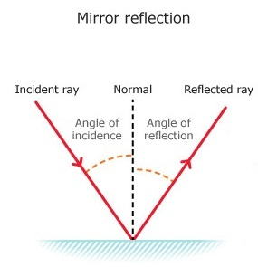

The reflection is when the light bounces off an objet. The most common exemples are mirror and water. If you want to reflect the light, the objet you use need to be shiny. If the object is smooth, then the light will reflect at the same angle as it hit the surface, or else, for a rough surface it will reflect with a different angle.


Most of the things we see are because light from a source has reflected off it. The light will hit any kind of object and will be reflect in any direction. Then the reflected light will enter our eyes toward the retina, the brain will analyse this light and interprete it as an image of the object.
Thanks to this propertie of the light, it can be very usefull in different domain, like for exemple in astology or security. The astology will use concave mirrors and security will use convex mirrors.
The inside of a spoon is one exemple of convex mirror. The deformation of the mirror will concentrate the light at a certain point called focal point. Concave mirrors are useful because they can make things seem larger. Concave mirrors are used in certain types of astronomical telescopes. The mirrors condense lots of light from faint sources in space onto a much smaller viewing area and allow the viewer to see far away objects and events in space that would be invisible to the naked eye.